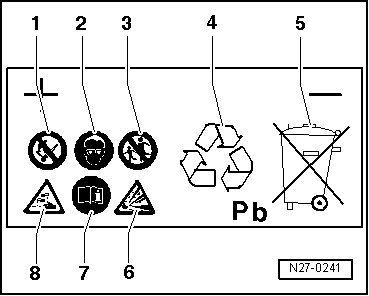

Battery Safety Precautions
Battery Safety Precautions
Recognizing and preventing risks
Batteries present risks. These risks are prevented when the warnings on the battery label, owners manual and in this Repair information are observed.
CAUTION!
• Personnel instructed in protection, such as e. g. a trainee or apprentice, may only perform work on vehicle batteries under supervision of technical personnel such as e. g. a master automotive mechanic or a master automotive electrician.
• Acid has strong corrosive properties. If batteries are handled inappropriately, there is a risk that personal injury may result from exposure to harmful electrolyte influences. Therefore, suitable remedies for acid damage must be kept readily available. Suitable remedy is e.g. soap solution.
• If electrolyte drips out from the battery, skin can be burned by acid and the vehicle may be affected by acid erosion and corrosion. It is a possibility that safety-related vehicle components can be damaged.
• When charging and when resting after charging, explosive gas is present. In extreme cases, if battery is handled inappropriately, the emitted gases may cause the battery to explode.
• Batteries with a colorless or light yellow visual indicator must be replaced. They may not be tested or charged and jump starting may not be used. There is a risk of explosion during testing, charging or jump starting.
• Generating sparks by sanding, welding, separating work and open flame, e.g. smoking in vicinity of the battery, is prohibited. Producing sparks through electrostatic discharge must also be avoided. Always touch the vehicle body before touching the battery.
• Only perform battery procedures in suitable and well-ventilated rooms.
Battery Safety Designation

1. When working in the area of the battery, fire, sparks, open light and smoking are prohibited. Avoid sparks when working with cables and electrical devices, and from electrostatic discharge. Avoid short circuits. For this reason, tools should not be rested on the battery.
2. Eye protection must be worn when working on the battery.
3. Always keep electrolyte and batteries out of reach of children.
4. Disposal: Old batteries require special disposal. They may only be disposed of at a suitable collection facility and only in consideration of legal regulations.
5. Do not dispose of old batteries in household waste.
6. When handling batteries, there is a risk of explosion. Battery charging produces a highly explosive gas mixture.
7. Always observe notes on battery in ELSA "Electrical Equipment - General Information" and in the owner's manual.
8. Battery acid can cause severe burns! Battery acid is severely corrosive, therefore protective gloves and eye wear must be worn when working on the battery. The battery must not be tipped, because acid may spill from the ventilation openings.